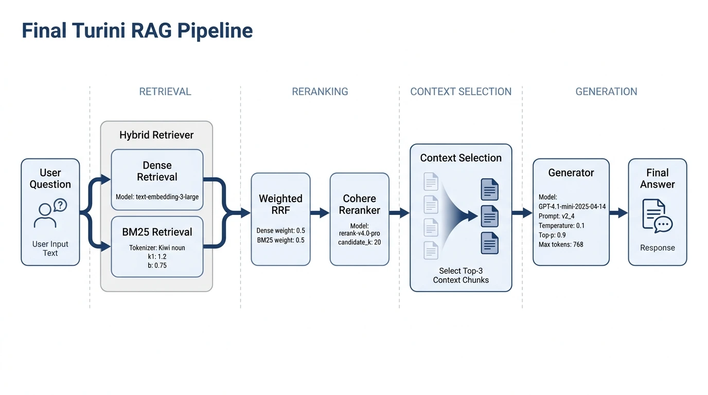

Turini helps people new to finance learn through quizzes and ask follow-up questions about concepts they find confusing. I worked on the RAG functionality as part of a three-person RAG team within a six-person project team.
My role
Implemented a pipeline combining query rewriting, dense retrieval, BM25, reciprocal rank fusion, reranking, and LLM response generation.
Constructed and refined an evaluation set with 157 questions and 298 gold evidence annotations.
Compared chunk sizes and overlaps using Hit@K, Recall@K, MRR, and nDCG, and analyzed cases in which reranking helped or hurt retrieval.
Extended retrieval and response generation to use multi-turn dialogue context.
Read the implementation and evaluation notes
When source context matters
During qualitative evaluation, we found that translated US financial material could be retrieved for questions about Korean financial rules. Reliable sources still needed to match the question's jurisdiction. Our RAG team added country metadata and prioritized domestic material for domestic questions.

The retrieval and generation pipeline.
When evaluation methods disagree
RAGAS-based automated evaluation sometimes rated the revised system below the baseline, while reading the same responses suggested an improvement. I considered how educational explanations and guardrails might affect the scores, as well as potential bias from developer-created evaluation data and human review.
This made me more interested in what each evaluation measures, and in understanding disagreements between retrieval metrics, automated answer evaluation, and human judgment.
I developed an evaluation framework to detect performance regressions in LLM and RAG applications, comparing a baseline against a candidate after changes to models, prompts, retrieval, or reranking.
Implemented classification evaluation with Accuracy and Macro F1, alongside retrieval evaluation with Hit@K, Recall@K, MRR, and nDCG.
Integrated automated regression testing with GitHub Actions CI.
Evaluated LLM-based intent classification using BANKING77.
I built a Unity reinforcement learning environment in which an agent learns to perform penalty kicks. My work covered environment construction, MDP design, and training experiments.
Defined the observation space, action space, reward function, and episode termination conditions.
Applied reward shaping and iterative environment tuning to improve learning stability and goal-oriented behavior.
Compared training settings and analyzed both successful behavior and failure cases across training iterations.
View the environment and training notes
The Unity training environment.
I recorded changes to state, action, and reward design, compared learning conditions, and examined why particular approaches worked or failed.
This study examined whether night-to-night sleep variability is associated with Epworth Sleepiness Scale (ESS) scores beyond average sleep duration. We processed 2,159 raw MESA actigraphy records, with 1,527 participants included in the final analysis.
My contribution
Defined a consecutive seven-day analysis window, outcomes, covariates, and sensitivity analysis conditions.
Reviewed missing data, device non-wear, unusually short or long sleep intervals, and intervals cut off at recording boundaries.
Derived mean and variability measures for sleep duration, sleep efficiency, and WASO, along with circular-statistics-based sleep midpoint measures.
Validated derived features against official MESA summary variables.
Prepared participant characteristics tables, adjusted ESS figures, and manuscript text. Organized a reproducible Python pipeline with execution documentation, dependencies, and synthetic-data tests, working with AI coding tools.
Read the findings and interpretation
Sleep duration variability showed a small positive association with ESS after adjustment for average sleep duration, age, sex, BMI, and apnea-hypopnea index (AHI). The additional explained variance was approximately 0.49 percentage points.
The effect was limited in explanatory strength. These observational findings were interpreted as associations, without making a causal claim.